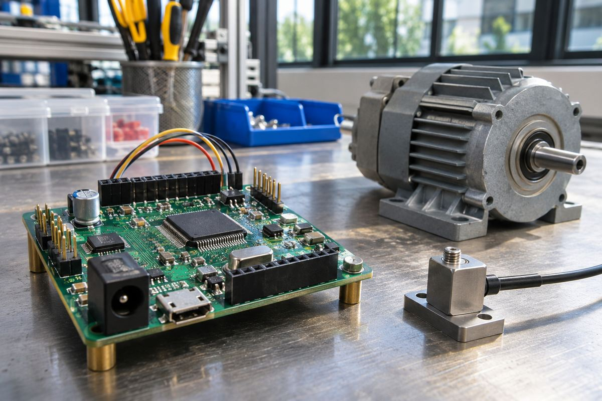

전자기기 / EXPLAINED
STM32H7P, 산업용 제어에 신호 처리·AI 가속 추가…양산은 2027년 1월 계획
2773 CoreMark와 최대 85 GOPS는 서로 다른 연산 성능 지표다.

ST마이크로일렉트로닉스가 11월 4일 STM32H7P 마이크로컨트롤러를 발표했다. Arm Cortex-M7 처리기에 디지털 신호 처리용 HSP와 Neural-ART 신경망 처리 장치 NPU를 더해 모터와 전력 제어, 상태 감시를 겨냥한다. 발표 당시 OEM에 샘플을 제공 중이며 양산은 2027년 1월 계획이다. 같은 달 평가 보드와 Discovery 키트도 공급할 예정으로, 발표를 즉시 일반 판매 시작으로 볼 수는 없다.
ST는 자동차와 산업, 소비자 기기 등에서 쓰는 반도체를 공급하는 기업이다. STM32는 그 마이크로컨트롤러 계열이며 H7P는 고성능 제어를 담당하는 H7 계열의 확장이다. MCU는 입력을 읽고 제어 명령을 출력하는 기능을 기기 안에 넣는다. 이번 제품은 기존 제어 작업에 신호 처리와 작은 AI 모델 실행을 결합해, 모든 데이터를 외부 서버로 보내지 않고 현장에서 판단하려는 설계다.
숫자 두 개를 나눠 읽기
회사는 Cortex-M7에 2773 CoreMark, NPU에 최대 85 GOPS를 제시했다. CoreMark는 정해진 코드로 처리기 성능을 비교하는 시험 점수이고, GOPS는 초당 수십억 단위 연산을 나타낸다. 서로 다른 작업과 장치를 가리켜 두 숫자를 더하거나 일반 컴퓨터의 체감 속도로 곧바로 바꿀 수 없다. AI 모델의 구조와 데이터 형식, 메모리 이동이 실제 처리 시간을 좌우하므로 최대 연산량만으로 응용 속도는 정해지지 않는다.
ST가 공개한 속도 비교도 특정 모델을 기준으로 한다. 태양광 인버터의 아크 결함 감지 모델은 소프트웨어 실행보다 40배, 이상 탐지 모델은 20배, 배터리 관리 모델은 15배 빠른 추론을 시연했다고 설명한다. 이 값은 제조사의 해당 모델 비교이며 모든 신경망이나 완성 장치의 처리 속도 상승률이 아니다. 아크 결함은 비정상적인 전기 방전 상황을 감지하는 안전 응용으로, 모델이 빨라져도 전체 보호 시스템의 검증이 대신되는 것은 아니다.
메모리에서는 최대 2MB 플래시와 확대된 TCM을 제시했다. 플래시는 전원을 꺼도 코드와 데이터를 보관하는 공간이고, TCM은 처리기가 빠르고 예측 가능한 방식으로 접근하도록 밀접하게 연결한 메모리다. 코드 저장 용량과 실시간 처리용 접근 특성이 다르다. 회사는 종전 1MB H7과 비슷한 가격대에서 더 높은 저장 밀도를 제공한다고 설명하지만, 실제 비교에는 패키지와 주문량 등 같은 조건이 필요하다.
개발 도구로는 Edge AI Suite, 모터 제어 소프트웨어와 새 STM32Cube 환경의 연결을 안내했다. 아날로그 입력을 디지털 값으로 바꾸는 ADC와 반대로 출력하는 DAC, 비교기와 타이머도 산업 제어에 쓰인다. 주변 회로가 강화됐다는 설명만으로 기존 보드에 핀과 소프트웨어가 그대로 호환된다고 가정할 수는 없다. 설계자는 필요한 입력 수와 속도, 메모리 배치와 발열을 함께 검토해야 한다.
공개 시작 가격은 1MB 플래시·LQFP100 패키지 제품을 1만 개 주문하는 조건에서 개당 4.43달러다. 개발 키트 한 개의 가격이나 개인 소량 구매가와 다르다. 주변 온도 최대 125°C 지원도 개별 시스템의 무조건적인 고온 안전을 보장하지 않는다. 편집부는 제어와 추론을 한 칩 가까이에서 처리하는 선택지가 넓어지는 변화로 보지만, 국내 재고와 최종 가격, 실제 모델 지연 시간은 별도로 확인할 사항으로 남겨 둔다.